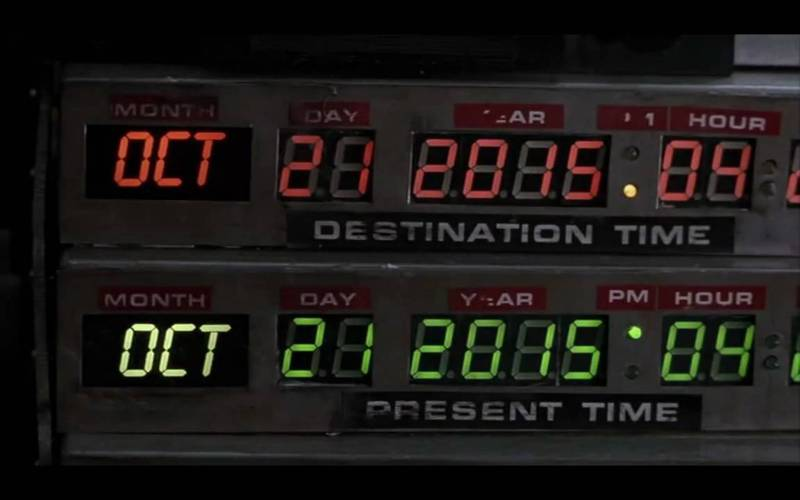

Programming Concepts in the Real World

There are many aspects to programming that are needed to write code. In this book we will focus only on some basic concepts that can be explained in isolation, and may be interesting for non programmers.
The goal is not to teach how to program, but to show what programming is about. What are some of the topics software engineer discuss, and which tools they use to solve problems.
Contributing
To suggest a topic, an improvement, or any sort of feedback, please create an issue in the GitHub repository.
Algorithms
Binary Search
Example
Dictionary
A person wants to look for a word in an English dictionary. They may open the book in any page, choose any word in it and compare it with the word they are looking for. Since the words are sorted they know in which way to proceed. They can now do this process over and over again until finding the wanted word.
Doing these steps will lead to the result sooner or later. But if instead of comparing any word, they compare with the word that is exactly in the middle of the acceptable range, the number of required comparisons is as low as it can be.

Guess Who?
The same idea can be applied to the children's game Guess Who?. The best strategy is to ask a question that will drop half of the possibilities.
On the other hand, asking a very specific question, it is very likely to get little information in most cases, and a lot in a few.
Definition
Binary Search is a list of steps that we can do to find a result in a collection. It is called "binary" because after each step, we should be able to keep only about half of the items in the collection.
In general, it is used on a list of sorted items, like words or numbers. But the same idea can be used any time we want to localize something, and we can reduce half of the possible results at a time.
Since half of the possibilities are dropped after each comparison, it is pretty fast to find what we are looking for in not so many steps. For a million items, we can localize any one in up to twenty comparisons. And for a thousand millions, up to 30.
Map/Reduce
Example
Elections
When a small group of people want to have an election where the vote is secret, each will write down their choice and then all are counted.
This however does not work well for large groups of people, since it will take a long time for everyone to vote and then count the results. Luckily, this is a problem that current countries had figured out: they divide the people in groups, each group will vote, a group member will count the results and add them up in a single sheet of paper. All those sheets of paper are then sent to a central person who adds up the votes to find the winner.
The act of counting each individual vote and write down the results is called "map", while adding them up is called "reduce".

Definition
Map/reduce allows us to divide a big problem into smaller ones that can be done at the same time, and then use the results of each to get the general result.
Asymmetric Encryption
Example
Coffers and keys
Before the telegraph was created, the only way to contact someone was to send a thing with a letter. The question is how to make sure nobody except the recipient reads it. If the sender can agree with them earlier, they can give them a key to a coffer, and then send a letter inside it. We will assume the coffer cannot be opened without the key.
Now there is a post office that keeps open coffers and the key of each is in the hands of the people interested in receiving letters. When a person wants to send a private letter, they will ask the post office for a coffer. Now they will include their letter in that coffer, and another open coffer inside of it, to which they own the key. The recipient can then answer privately using this second coffer.
Definition
Using asymmetric encryption anyone can send letters privately to anyone that has a coffer in the post office, or if they can somehow receive a coffer once.
Compression
Example
Map
People going to a city they do not know may want to plan which streets to take to visit different places. There are many ways they can do this.
Uncompressed
They can draw on top of the map which streets to take. That way it would be really easy to know how to continue.
Lossless compression
If the map needs to be used to go to many places, all the lines drawn may end up being too many lines. Instead they can write down what street to take and where to turn, and along the map they can get the same information they had in the previous case, although it will be harder to see.
Lossy compression
If they cannot take the map with them, for example if they have to return it, they may also want to write down some other useful information like how far are the streets from each other, and maybe even draw a small copy of the map. This time, they do not have all the information, but they have enough.

Definition
By compressing we change its representation to be smaller. With a lossless compression we can get the exact same thing we had in the first place, but with a lossy compression we will not get as much, but it might be enough our needs.
Data Structures
Array
Example
Grocery List
To make a list to go to the market, people take a sheet of paper and start writing from top to bottom what you need to buy. This is the simplest way of making a list.

Definition
An array is a list of items. Adding more at the end is easy. And adding more space (including a second sheet of paper) is also possible.
It is not easy to add things in the middle of the list. It requires you to copy every item one line under each of them to have the free space where you want the new item.
Linked List
Example
Field trip
In a school field trip, stand all children in a line and ask them to remember who is to their right. Now, you remember who is in each of the sides.
Now at any point, you can ask the first child to point to the second, and then ask the second for the third, and so on. If you get to the last child then you are sure that your list is complete.

Definition
A linked list is a way to represent a list of items. In this case, it is easy to add something at any point in the list. If the list is sorted, you can find where the item needs to be added and just ask the previous item point to the new value and the new value to what the item was pointing at.
It is hard, though, to identify a item by its position. If you want to know the position of a item, you have to start from the first and count until you get to it.
Double Linked List
Example
Grocery List
This time, to make a list to go to the market we are going to write each item we want to buy in a post-it. We can now stick any item we want to add to the list on any position, which will help us to keep the list sorted in a useful way.
We can also walk the list from top to bottom or from bottom to top.

Field trip
In a school field trip, stand all children in a line and ask them to remember who is to their right and to their left. Now, you remember who is in each of the sides.
Now at any point, you can ask both of the sides to point to the next child, and continue until the same child was pointed to by both lists.

Definition
A double linked list is yet another way of representing a list of things. Like in the linked list case, we can easily add items anywhere in the list, but now we can walk the items from either of the sides, but we are asking each item to remember more.
Hash Map
Example
Closet
When organizing a closet, people usually group clothing by type. You will see a pile with t-shirts, a pile with pants, a socks drawer. And now, whenever you want to pick something, you go to the group that should have it, see all of the items in there and pick the right one.
Now, if we wanted to, we could add more detail to the arrangement. Instead of having a socks drawer we can have a green socks drawer, another for red socks, another for white socks, and so on. As long as we know in which drawer the sock we are looking for is, we can look it up faster, since we will have less incorrect items in the drawer.

Socks made by Freepik from www.flaticon.com. Licensed under CC BY 3.0. Colored by Sebastian Waisbrot.
Definition
A Hash Map groups things by characteristics. If we have enough groups, we can add and look up any item really fast.
Btree
Example
Dictionary
Let's take a dictionary and add at the beginning a new page that associates each letter with the page that letter's first word is. Now, at the begin of each letter, we can create another page for the that letter and the next one in the word, and so on.
Now we can find out each word by following the pages we just added, letter by letter.

Definition
Each of these pages we are adding is called an "index". A Btree allows you to follow index after index until getting the item you are looking for. The number of indexes to follow grows with the number of items, but at a much slower rate.
Databases
Consistency
Example
Civil Registry
A civil registry keeps records of people's personal information like births, marriages and deaths.
For a Civil Registry to be a consistent database, we need to make sure of the following:
Information written is always correct. For example, nobody can die more than once, and only people who was born can get married.
Anything written will be saved and available when reading afterwards. No sheet can be lost or forgotten.
We can say instead it is eventually consistent if the written report does not need to be available right away. For example, if we have different offices receiving information, a birth that is written in one may not be known in the other office until they share records at some future time.
Atomicity and Isolation
Example
Bank Transfer
If a banker wants to move money between two accounts, there are actually two operations: take the amount from one of the accounts and add it to the other one.
For these operations to be considered atomic, they need to happen both or none of them. If money is added to one of the accounts, but the reduction in the other one does not go through (not enough funds, for example) the first operation needs to be taken back.
For them to be considered isolated, nobody else should be able to check out the balances of the accounts after one operation but before the another one. Results must be available as one.
SQL Injection
Example
Who's on First?
In "Who's on first?", Abbott names the players on a baseball team for Costello, but their names confuse Costello because they are also English words that could be part of his questions or Abbott's answers.
For example, the player on first base is "Who", then when asking "Who's on first" it could mean either "Is the person on first base named Who?" or "What is the name of the person in first base?".
Explanation
A SQL Injection works by introducing a term in a statement that changes its meaning for the reader from what the writer actually meant.
CAP Theorem
Example
Civil Registry
Suppose a Civil Registry with five offices and phone lines between them. There are different ways of organizing. We are going to look into two of them.
# Highly available (AP)
Each of the offices can take new information from people and at the end of the day, they will share it with all the other offices.
This could be a problem since it may allow incorrect information, for example if a person is filed as dead in one office and then gets married in another one. If there was a single office, this would never happen since that person's registry will be kept up to date, but now we are allowing up to one day old information.
Other possible problem is what happens if one office has a problem and some of its information from the day is lost. People who already left the office do not know the Registry lost it and will run into a problem in the future.
Highly consistent (CP)
In this other approach, any information change needs to be checked by all the offices. This way, all the information is always correct, available in every office, and no one is the single responsible for it.
Problems may appear when the phone lines are not working properly. If a single office phone is broken, all offices will stop working.
Definition
It is said that a distributed database can only be highly available or highly consistent. Different balances between both can be achieved for different use cases.
Miscellaneous
TCP vs UDP
Example
Walkie Talkie
Two kids got a pair of Walkie Talkies, a small two-way radio. They are playing outside, in a large area. They soon realize sometimes the sound is not good, but they keep playing and enjoying when they work.
Airplanes
Airport's control tower use a similar system to talk to airplanes. However, in this case, receiving the right information is really important, so there are agreements in place to get rid of these problems. When an order is given from the control tower, the airplane must not only say they have received it, but also say it back to make sure it was correctly received.
Definition
Both TCP and UDP allow two parties to talk to each other, but TCP allows the sender to know that the information was sent completely and correctly.
Encoding
Example
Finger counting
When people learn to count, they use their hand. Each finger that is up counts as one, then showing three fingers represent the number three.
If we want to add up to larger numbers we will run out of fingers when we want to go over ten. But we can set a different value to each one and then count to over one thousand.
For example, in our left hand the thumb can be worth one, the index finger can be two, the middle one four, the ring one eight and the pinky sixteen.
Now if we want to represent the number fourteen, we can show our three middle fingers.

Hands made by Freepik from www.flaticon.com. Licensed under CC BY 3.0.
Definition
"Encode" a value is the action of representing it in a specific way, while "decode" is to read that representation to get the actual value.
To successfully encode and decode a value, it is necessary for the sender and recipient to agree on what representation to use.
Overflow
Example
Back to the Future time machine panel
In the film Back to the Future the Doc creates a time machine that can travel to any time in the past or in the future. But if we see the control board we might notice a possible problem.

The year is represented by an LCD display with four numbers. If we try to go to any year after 9,999 or before -999 it will not be represented! If we try to write it, the numbers will actually be written in the hour box instead.
Definition
An "overflow" happens when we want to represent a number that is too big or too small for the space it has available.